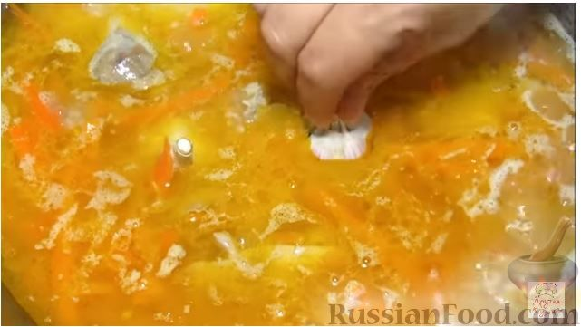

Плов
Продукты
Мясо (курица, баранина и т.д.) - 1 кг
Рис (длиннозерный пропаренный или другой рис) - 1 кг
Морковь - 1 кг
Лук репчатый - 4 шт.
Чеснок - 2 головки
Перец острый свежий - 2 стручка
Зира или другие пряности - по вкусу
Соль - по вкусу
Масло растительное - 250-300 мл
Способ приготовления
1. Подготавливаем все продукты для плова.
Мясо нарезаем кусочками.
2. Лук режем кубиками, морковь - достаточно крупными брусочками.
3. В разогретом казане слегка обжариваем лук на растительном масле.
4.
Добавляем мясо, обжариваем почти до готовности.
5. Засыпаем морковь, обжариваем. Солим, добавляем специи.
6.
Рис хорошо промываем, засыпаем в казан, перемешиваем и заливаем кипятком, чтобы вода покрывала рис на 2-2,5 см.
7. Доводим до кипения, не накрывая крышкой. Пробуем на соль и если нужно досаливаем.

8. Как только закипит, добавляем целые головки чеснока, очищенные от верхней шелухи, и стручки острого перца.
9. Выключаем огонь и даем плову постоять минут 15-20.

10. Плов готов! Приятного аппетита!